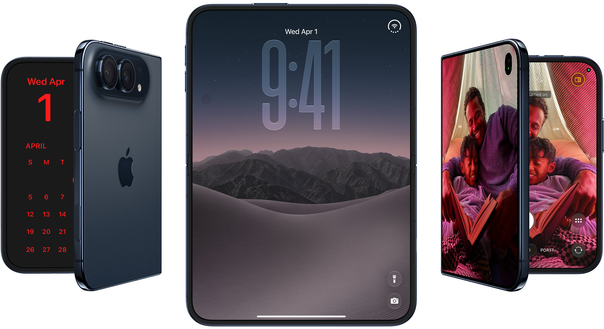
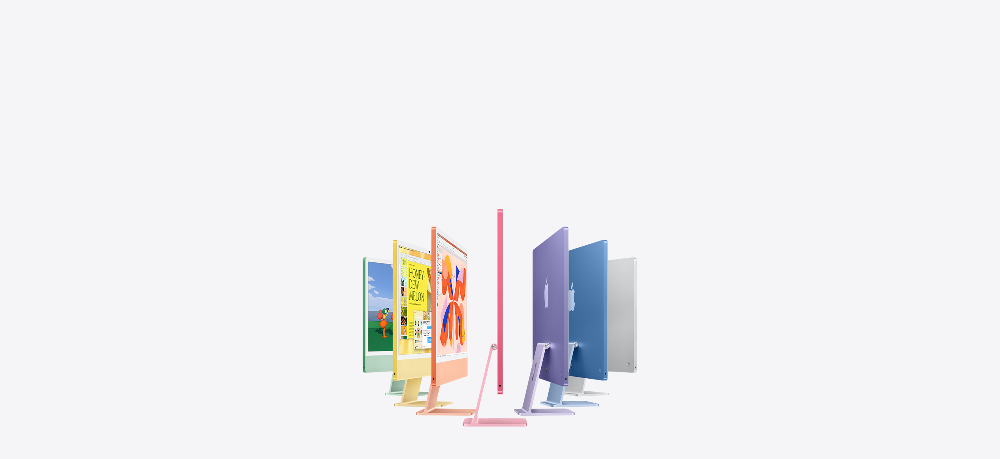
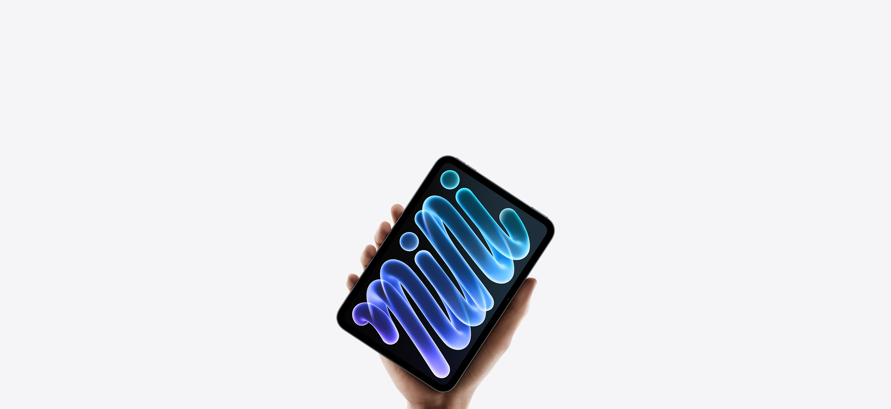
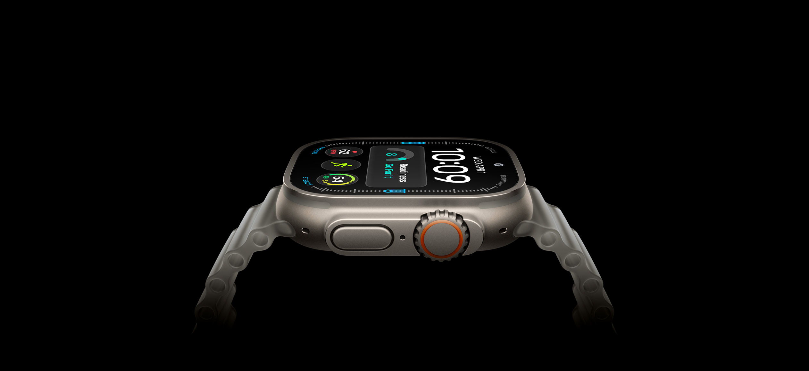
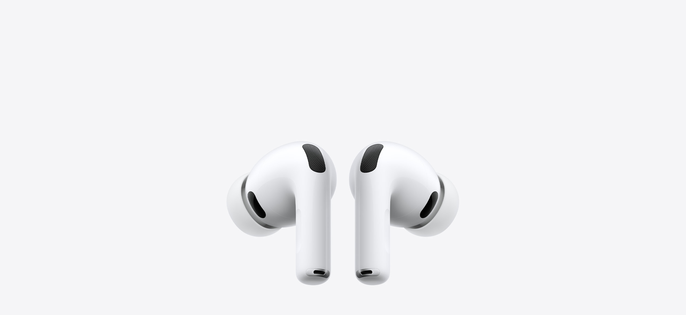
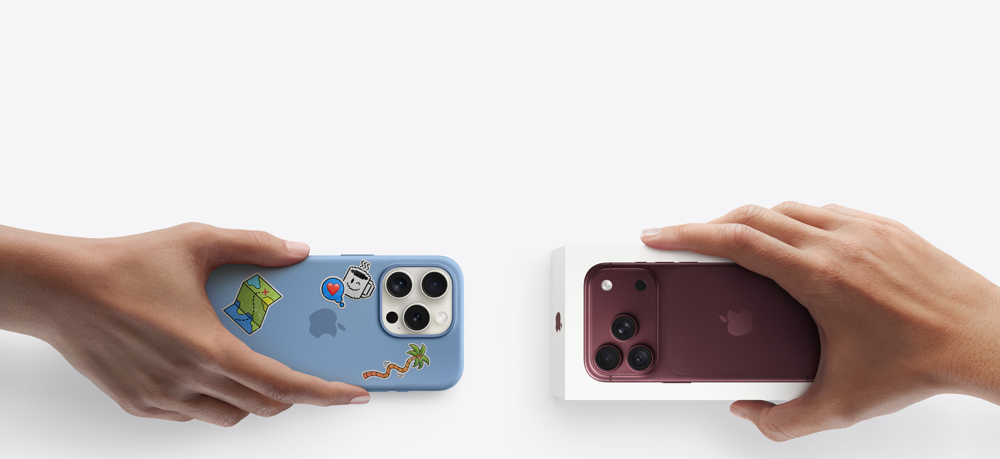

Hallo, hallo

Pro pakt door
Allllleskunner. Met een gloednieuwe chip.

Mini gaat mega

De meest nauwkeurige hartslagmeting in een wearable.
Meer batterij dan jij

Ontdek de magie van Actieve Ruisonderdrukking

Nu met de kracht van M5
Krijg €190-€780 korting bij inruil van een Iphone 13 of nieuwer.
